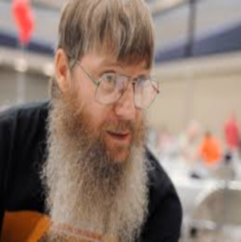

Nigel Richards, né en 1967 en Nouvelle-Zélande, est considéré comme le plus grand joueur de Scrabble de tous les temps. Il a remporté le championnat du monde anglophone à cinq reprises notamment en 2007, 2008, 2011, 2013 et en 2015. En 2016, il ajouta à son palmarès le championnat du monde de scrabble français ( après seulement quelques jours de préparation), premier scrabbleur à réaliser cet exploit. Il est connu pour sa mémoire phénoménale et sa capacité à gagner des tournois dans des langues qu'il ne parle pas, comme le français, ce qui n'est pas commun. Nigel Richards est également reconnu pour sa contribution à la promotion du scrabble en participant à des évènements et en encourageant les jeunes.
Histoire du Scrabble : Des Origines à Aujourd'hui
Origines et Développement Initial:
Le Scrabble a été inventé pendant la Grande Dépression par l'architecte américain Alfred Mosher Butts en 1933. Ce dernier a associé des éléments de jeu de mots et de jeu de société en se servant d'un plateau et des lettres marquées par des valeurs en points. Initialement appelé "Lexiko", puis "Criss-Crosswords", le jeu a évolué pour prendre l'appelation "Scrabble" que nous connaissons aujourd'hui. Butts a étudié la fréquence des lettres dans la langue anglaise pour déterminer la distribution et la valeur des lettres dans le jeu.
En 1948, James Brunot, un entrepreneur, a acheté les droits du jeu à Butts. Il a simplifié les règles et changé le nom en "Scrabble". La première version commerciale du jeu a été lancée en 1949, mais les ventes initiales étaient modestes.
Le grand tournant pour le Scrabble est survenu en 1952 lorsque Jack Straus, président de Macy's, a découvert le jeu en vacances. Impressionné, il a commencé à le vendre dans son magasin. La demande a explosé, et Selchow and Righter ont acquis les droits de production en 1953.
Popularisation et Expansion Mondiale:
Dans les années 1950 et 1960, le Scrabble s'est répandu dans le monde anglophone, puis a été adapté à de nombreuses autres langues ( estimation de 30 langues). Des tournois ont commencé à être organisés dans les années 1970. Le championnat du monde de scrabble le fut pour la première fois en 1991 à Londres. Dans l'optique, de faciliter la règlementation du jeu concernant les mots autorisés, le "Dictionnaire officiel du scrabble en français" et le "Collins Scrabble Words". ont été publiés. Aujourd'hui, tout en conservant son authenticité, le scrabble est disponible sur le net pour le plaisir des internautes. Le jeu est devenu un phénomène culturel. Il existe différentes variantes de scrabble parmis lesquelles nous retenons le scrabble classique ( joué sur un tableau de 15x15 cases avec des lettres marquées par des points), le scrabble duplicate ( dans cette variante, tous les joueurs reçoivent le même tirage de lettres afin de rendre le jeu équitable), le scrabble junior ( pour les enfants, avec un tableau moins grand et les règles revues à la simplification), etc.
Quelques joueurs qui ont marqué leurs générations



Les joueurs de Scrabble de haut niveau sont reconnus pour leur mémoire lexicale exceptionnelle et leur capacité à former des mots stratégiques sur le plateau. Ils excellent non seulement dans la connaissance des mots, mais aussi dans la gestion du plateau et le calcul des probabilités.
Nigel Richards
DOUTE Fabien

Scrabbleur de nationalité française, DOUTE Fabien a gagné le respect de ses condisciples par ses performances. Il est reconnu pour son approche stratégique et sa capacité à gérer des situations de jeu complexes. Champion du monde en titre de scrabble francophone, DOUTE Fabien est classé premier du classement international de scrabble classique de la saison 2023-2024. Il devance ainsi Gauthier HOUILLON vice champion du monde 2022. Lui également participe au soutien des jeunes dans le monde du scrabble.
MICHEL Antonin
Français de nationalité, né en 1977, MICHEL Antonin est réputé pour ses performances dans des tournois nationaux et internationaux. Son exellent maitrise du vocabulaire lui est d'une grande aide dans les partis. On compte dans son palmarès de nombreux prix comme le championnat de scrabble francophone remporté à neuf reprises (1998, 2003, 2004, 2005, 2017, 2018, 2019, 2023, 2024), le championnat du monde de scrabble remporté à cinq reprises ( en 2005, 2007, 2010, 2013, 2023, et classé troisième du championnat du monde 2024). Ces différents triomphes font de lui le joueur le plus titré du scrabble francophone.
SANOKO Mamadou

SANOKO Mamadou est un joueur de scrabble ivoirien. Il est vainqueur de plusieurs tournois en Afrique et a participé à des evènements au niveau international. Il est le vainqueur du monde de scrabble francophone en 2022 en Belgique après avoir dominé le français Gauthier HOUILLON, offrant ainsi à sa nation un troisième titre mondial ( après 2008 et 2016). SANOKO Mamadou est classé cinquième du classement international de scrabble classique de la saison 2023-2024, premier africain sur la liste. Le camerounais SEUNANG Patrick Ulrich, lui, est classé septième. L'ivoirien Mamdou SANOKO est actif pour le développement de la discipline dans sa région, et constitue une source d'inspiration pour ses confrères.
David Eldar

Né en 1990, David Eldar est un joueur australien passioné de scrabble qui se fait distingué dans le domaine. Il est vainqueur du championnat du monde junior de scrabble en 2006; du championnat d'Australie en 2007, 2013, 2014; du championnat nord-américain en 2016; du championnat du monde de scrabble anglais en 2017 et 2023; etc. Il est reconnu pour sa mémoire hors du commun, et sa rapidité dans le jeu. David Eldar est classé deuxième du top cinq du World English Scrabble Players Association derrière Nigel Richards. Il est auteur de différents articles sur le scrabble, partageant ainsi son expérience dans le jeu.
Le scrabble, s'étant adapté à plusieurs langues n'a pas de classement mondiale global. Chaque langue ayant ses mots spécifiques, il est difficile d'établir un classement global. Nous rencontrons autant de championnats nationnaux et de championnats du monde de scrabble que de langues auxquelles le scrabble s'est adaptées, les championnats les plus reconnus étant celui français et anglais. Aujourd'hui, le Scrabble continue d'évoluer avec l'ère numérique. Des applications mobiles et des versions en ligne ont rendu le jeu plus accessible que jamais, permettant aux joueurs du monde entier de s'affronter. Les tournois en ligne et les compétitions internationales maintiennent l'intérêt pour ce jeu classique, qui reste un défi intellectuel et linguistique apprécié par des millions de personnes.